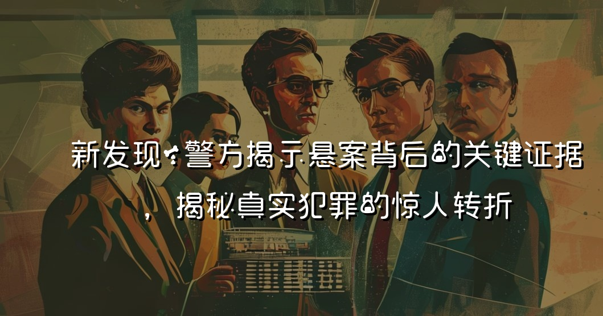

近些年，悬疑案件频频引发公众关注，警方最近揭示了一个重要的未解案件背后的关键证据，展示了真实犯罪中的令人震惊的转折。本文深入分析了新发现如何影响案件的进展，探讨了犯罪心理与侦探工作的复杂性，并提出了对未来案件侦破的可能影响。
新发现：警方揭示悬案背后的关键证据，揭秘真实犯罪的惊人转折
近年来，悬案的揭开不仅吸引了大众的眼球，更是引发了对真实犯罪心理和侦探工作的深刻思考。当警方在一个长期未解的案件中找到关键证据时，这一转折往往让人瞠目结舌。本文将带领读者走进一起真实事件，通过对关键证据的解析，揭示案件背后的惊人转折。
案件背景
故事的起点是在一个看似平静的小镇上，发生了一起离奇的失踪案件。受害者是一名年轻女孩，名叫小洁。她的失踪震动了小镇， 警方和社区都投入了大量人力物力进行搜寻，但始终没有找到她的下落。随着时间的推移，案件逐渐被遗忘，而小洁的家庭则陷入无尽的痛苦与绝望之中。
转折点的降临
多年后，随着科技的进步，警方在对未解案件进行重新审视时，意外发现了一个长久以来被忽略的关键证据。这是一段来自监控摄像头的影像，正是这一细节让案件有了新的进展。在仔细分析之后，警方发现监控中出现了一辆可疑的汽车，与失踪案的时间和地点完全吻合。
证据分析
Fig: A scene depicting a detective viewing surveillance footage in a dimly lit room, focusing on a suspicious vehicle linked to a long-unsolved case.
在对这段影像进行分析时，警方发现了多个重要信息：
- 车辆型号与颜色：警方通过车主登记文件最终找到了该汽车的主人，并确认其在案发时正在镇上。
- 车辆行驶路线：技术人员还对监控进行反向追踪，显示出这辆车在案发当日的行驶轨迹，正好经过了小洁被最后目击的地点。
- 车内人物特征：通过视频的清晰度，警方甚至提取到了车内某个可疑男子的特征，这为后来拘捕提供了线索。
犯罪心理的深度分析
在案件的处理过程中，心理专家介入，帮助警方对嫌疑人的心理做出分析。这名男子的行为模式与过往多起失踪案件中的嫌疑人有相似之处：
- 控制欲：嫌疑人在案发前对周围环境的积极观察，显示出他有强烈的控制欲和对目标的选择性。
- 社交能力：他能够通过与周围人的交往掩盖自己的真实意图，充分显示出高超的社交能力，这一点给警方的调查带来了极大挑战。
抓捕行动与后续调查
凭借这一系列证据，警方迅速展开了对嫌疑人的抓捕。这一阶段的行动丝毫没有松懈，警方全力以赴，确保能够安全逮捕。在进行几次秘密调查后，警方最终在一处民宅内找到了嫌疑人。经过审讯，嫌疑人供认了自己的罪行，揭示了小洁失踪背后的真相。
社会反响与案件影响
案件的水落石出，在小镇上引起了巨大的反响。许多人开始重新审视自身的生活环境，家长们对孩子的安全问题更加关注，甚至在社区中推动成立了更完善的安全教育项目。此外，案件的成功侦破也让越来越多的人意识到，现代技术与心理学的结合能够为案件侦破提供更强有力的支持。
Fig: An emotional reunion scene of a family members embracing after receiving news about their missing loved one, set against the backdrop of a small town.
未来的改进与挑战
尽管这一案件的侦破让人振奋，但也揭示出很多挑战。随着科技的不断进步，犯罪手段也在不断变化。未来，警方需要与时俱进，通过更多的技术手段和心理剖析来应对日益复杂的犯罪现象。此外，案件的侦破和心理学的结合也为未来侦探工作指明了方向，提高了警方对于案件的处理能力。
总结与思考
这一案例不仅仅是一个简单的失踪案解密，更是对现代侦探工作和犯罪心理深刻思考的开始。在真实的犯罪世界里，每一个细节都有可能造成翻天覆地的变化。随着科技的发展和证据分析的深化，未来的犯罪侦查必将愈加复杂，但同时也更加充满希望。人们应当继续提升自身对安全的意识，同时也期待着每一个悬案都能够早日见到真相。
通过本案例的分析，记者希望引起公众对于警方侦探工作的重视，让更多的人意识到犯罪不是偶然，而是复杂心理与环境的交织。